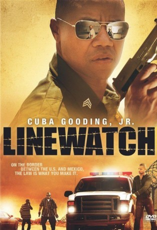

#4787 Linewatch
 
 IMDB-Wertung: 5.5 / 10
IMDB-Wertung: 5.5 / 10  Metascore: 0
Metascore: 0 
Grenzkontrolleur Dixon fährt Streife am Rio Grande und sucht gerade einen Menschenschmuggler, in dessen Truck illegale Einwanderer erstickten, als ihm bei einer Kontrolle ein Bekannter aus verdrängter Vergangenheit begegnet, seinen Kollegen erschießt und ihn erkennt. Früher einmal war Dixon nämlich unter dem Künstlernamen Mad Dog Führungsmitglied einer Streetgang. Jetzt wollen seine alten Kumpel Drogen über die Grenze bringen, zählen auf seine Hilfe und nehmen zur Sicherheit seine Familie als Geiseln.
Jahr: 2008
Dauer: 82 Minuten
FSK: 16
Land: USA Studio: Sony Pictures Home EntertainmentTonspuren:
Untertitel:
Auflösung: 1080p (1920x848) Größe: 3399 MB
Genre: Krimi, Drama, Thriller
Regisseur: Kevin Bray
Drehbuch: Gonzo Digimation
Soundtrack:
Darsteller:
 Cuba Gooding Jr. als Michael Dixon
Cuba Gooding Jr. als Michael Dixon Omari Hardwick als Kimo
Omari Hardwick als Kimo Evan Ross als Little Boy
Evan Ross als Little Boy Dean Norris als Warren Kane
Dean Norris als Warren Kane- Sharon Leal als Angela Dixon
- Omar Paz Trujillo als Luis
 Chris Browning als Spencer
Chris Browning als Spencer William Sterchi als Simon
William Sterchi als Simon- Jimmie Romero als Vargas
- Dan Burkarth als Jim Barnett
- Genia Michaela als Karate Instructor
 Luce Rains als Harris
Luce Rains als Harris- Angelique Midthunder als Dispatcher
- Giselle Bonilla als Adr / voice
- Jesus Jr. als Jesus Padilla
- Art Bonilla als Dialogue coach , uncredited
 Z. Ray Wakeman als Office Guy , uncredited
Z. Ray Wakeman als Office Guy , uncredited- Malieek Straughter als Cook
- AMG als Stokes
- Francisco A. Fernandez als Juan
- Bryan Lane als Sam King
- Josh Coffman als Bill Krott
- Dave Colon als Border Patrol Agent , uncredited
- Daniel J Gonzales als Mexican immigrant , uncredited
- Fredrick Lopez als Jenkins , uncredited
- Brian Reece als Coroner , uncredited
Datei: X:\2008(G-M)\Linewatch (2008, FSK16, 1920x848).mkv seit 16.11.2016
Festplatte: HD 2008(G-Z)-2009(A-F)
 Es gibt insgesamt 73 Filme in der Gruppe '2008(G-M)'
Es gibt insgesamt 73 Filme in der Gruppe '2008(G-M)'